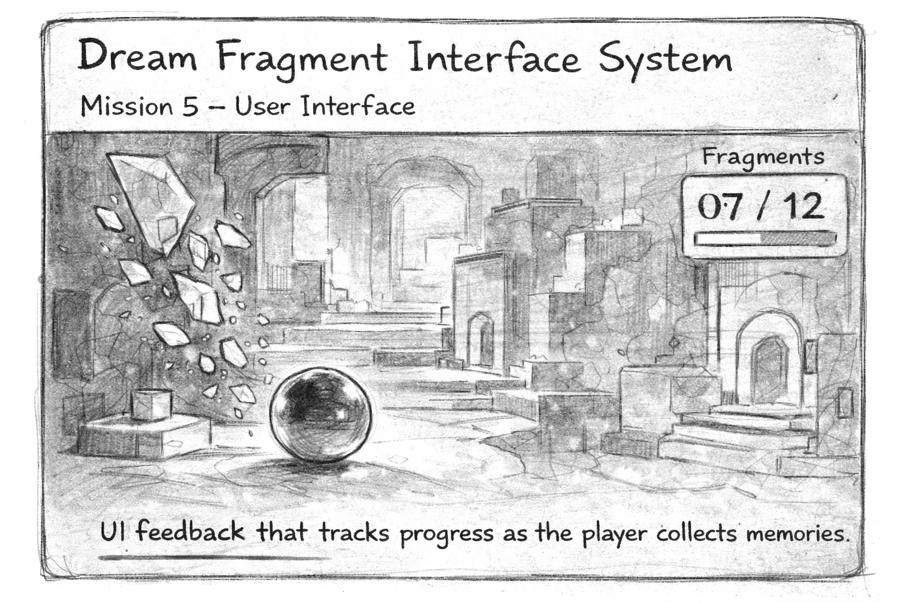
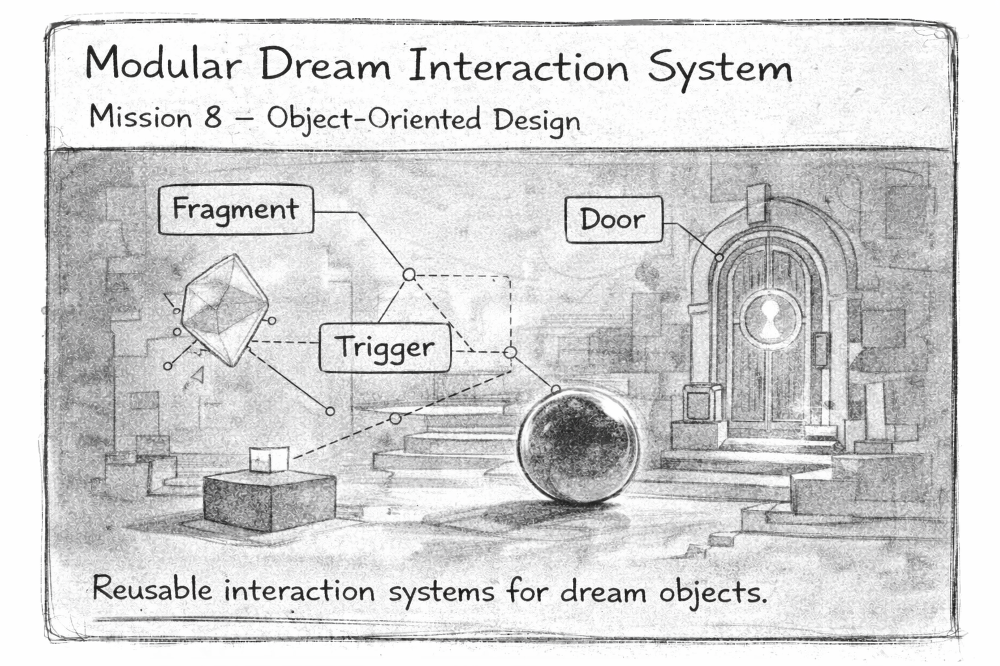
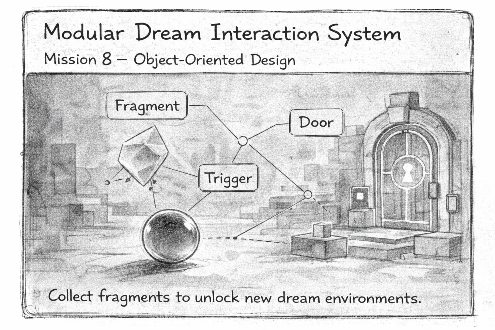

These three proposals explore how interaction, interface feedback, and system design can expand the Dream Museum prototype.
Mission 5: User Interface

This experiment explores how UI feedback can support interaction in the Dream Museum prototype. The player controls an orb moving through a floating corridor and collects fragments representing pieces of memory.
When a fragment is collected, the UI updates to show the current fragment count. This visual feedback helps the player understand progress and reinforces the relationship between movement, collection, and the environment.
Focus: score counters, UI text updates, and simple player feedback. The goal is to make the gameplay loop clearer and more meaningful through interface design.
Mission 6–7: Scene Flow & Data

This experiment explores how interaction can drive progression through multiple dream spaces. Instead of a single corridor, the Dream Museum becomes a sequence of connected environments.
As the player collects fragments within one space, they unlock a portal or door that leads to the next dream area. Each space represents a different fragment of memory and creates a stronger sense of narrative movement.
Focus: scene transitions, progression logic, and maintaining player data between spaces. The goal is to explore how interaction can guide movement through a larger dream environment.
Mission 8: Object-Oriented Design

This experiment explores how interaction systems can be designed using object-oriented programming principles. Instead of building each interaction separately, objects in the Dream Museum will share reusable behaviors.
Fragments, doors, and other dream objects can respond to player interaction through modular scripts. These objects may trigger different outcomes such as opening doors, updating the UI, or activating new events in the environment.
Focus: abstraction, encapsulation, and reusable interaction systems. The goal is to build a flexible structure that allows the dream environment to grow while keeping the code organized and scalable.